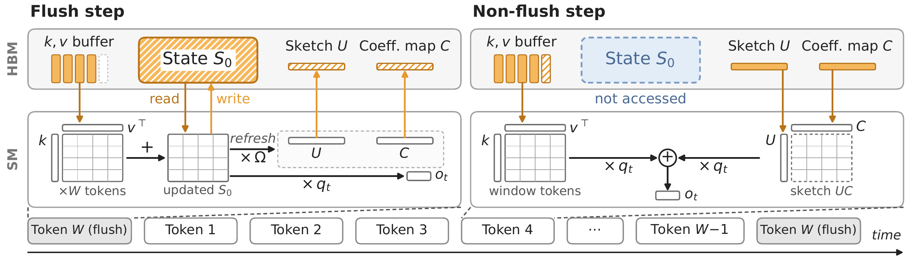
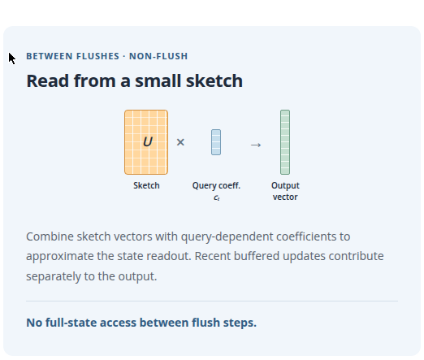

线
性
注
意
力
解
码
的
最
大
开
销
不
在
计
算
，
而
在
反
复
搬
运
状
态
。
S
k
e
t
c
h
S
S
M
把
状
态
写
回
全
量
、
读
出
只
读
草
图
：
状
态
访
问
流
量
降
一
个
数
量
级
，
精
度
几
乎
不
掉
，
d
e
c
o
d
e
吞
吐
做
到
2
.
2
6
倍
。
循环状态把信息带进每一个未来步，压缩状态也会把近似误差带进去。全状态更新St = Mt·St-1 + Bt；压缩版S̃t = Q(Mt·S̃t-1 + Bt)，每步新增压缩误差 εt，误差递推Et = Mt·Et-1 + εt：每一代的误差都会被下一代继承。
这正是已有状态压缩路线（剪枝、量化）的软肋：状态访问流量稍降，精度就跟着掉，因为压缩丢掉的信息在后续解码步里越滚越大。SketchSSM的切法是反过来的：写永远写全状态，压缩只发生在读出。状态本身从不被近似替换，压缩误差进不了状态递推链。
代价是读出近似：窗口内全状态固定，但每步的有效查询都在变，直接算每个查询的输出就得反复重读全状态。SketchSSM用一个小的固定查询基近似这些变化的查询：flush步读一次全状态，把基向量的输出全预计算成紧凑草图；步间查询只组合这些预计算输出，不再碰全状态。
效果：平均草图rank 8、窗口16时，四个模型（Mamba-2、Gated DeltaNet、KDA）在四个benchmark上平均精度保持，状态访问流量降9.4到10.7倍；Nemotron Nano 9B v2在单张RTX PRO 6000 Blackwell、batch 320的decode实测里跑到7634 tokens/s，是标准基线的2.26倍，比ReplaySSM快1.64倍。
一个窗口W步只做一次全状态更新。flush步：把缓冲的更新写进未压缩状态，同时刷新紧凑草图U与系数映射C：草图构造直接融进状态更新内核，状态从不被近似替换。ReplaySSM已经把状态写的开销摊到多步，全状态更新负担得起。
非flush步：读出分两路拼起来。窗口内缓冲的key-value更新直接贡献精确输出；状态读出走草图：只读紧凑的草图与系数映射，不访问全状态。每步的有效查询q̃t用查询相关的系数ct组合草图向量：o ≈ Uct，ct = Cq̃t。
注意口径：避免误差累积指的是状态压缩丢掉的信息不再进递推链；读出近似误差仍可能经输出向量影响后续更新。SketchSSM掐的是最要命的那条传播路径。

选基的目标是保住输出：最小化输出重建误差，等价于状态加权的查询近似误差。草图矩阵 Ω⋆ = E0^(-1/2)·PG：对zt = E0^(1/2)·q̃t做无心PCA，取前G个特征向量；E0是平均状态几何 𝔼[S0·S0⊤]。每个state head离线校准一次，推理时基固定不变。
flush步用新状态刷新草图与映射：U = S0⊤Ω⋆，C = (U⊤U)†U⊤S0⊤。步间读出ct = Cq̃t，o = Uct：只解一个小系数向量，再做一次小矩阵乘。
四个模型（Nemotron Nano v2、Nemotron 3 Super、Qwen3.8 Flash-Next、GLM 5.3 Flash，覆盖Mamba-2、Gated DeltaNet、KDA）在MATH-500、AIME25、GPQA Diamond、LiveCodeBench上的结论一致：rank 8时SketchSSM的精度曲线贴着标准基线，状态访问流量少9.4到10.7倍；剪枝（GHOST/DRRQR）与量化（DSQ）在更小的流量削减下精度就断崖。rank降到4、2时流量继续降，精度开始松动：草图rank就是精度-流量的trade-off旋钮。
decode实测（Nemotron Nano 9B v2，RTX PRO 6000 Blackwell，batch 320）：
| 方法 | IFEval | MATH-500 | HumanEval | MBPP | 平均 | 吞吐(tokens/s) | 相对标准加速 |
|---|---|---|---|---|---|---|---|
| Standard | 86.1±1.3 | 67.7±1.7 | 81.4±2.5 | 71.1±1.9 | 76.6±0.9 | 3383 | 1.00× |
| ReplaySSM | 85.8±1.3 | 66.4±1.7 | 81.9±2.4 | 70.8±1.9 | 76.2±0.9 | 4669 | 1.38× |
| SketchSSM | 85.4±1.3 | 67.5±1.7 | 80.9±2.6 | 70.9±1.9 | 76.2±1.0 | 7634 | 2.26× |
B300、窗口16、batch 512、rank 8下整窗linear attention相对标准实现：Mamba-2（Nemotron 3 Super）7.30倍，Gated DeltaNet（Qwen3.8 Flash-Next）5.02倍，KDA（GLM 5.3 Flash）5.24倍。flush步的草图构造开销融在更新内核里，非flush步只付小草图的读取cost。
端到端：Nemotron 3 Super单张B300，2K上下文decode吞吐2.77倍，8K上下文2.33倍（各方法取最大batch对比标准基线）。

参考：